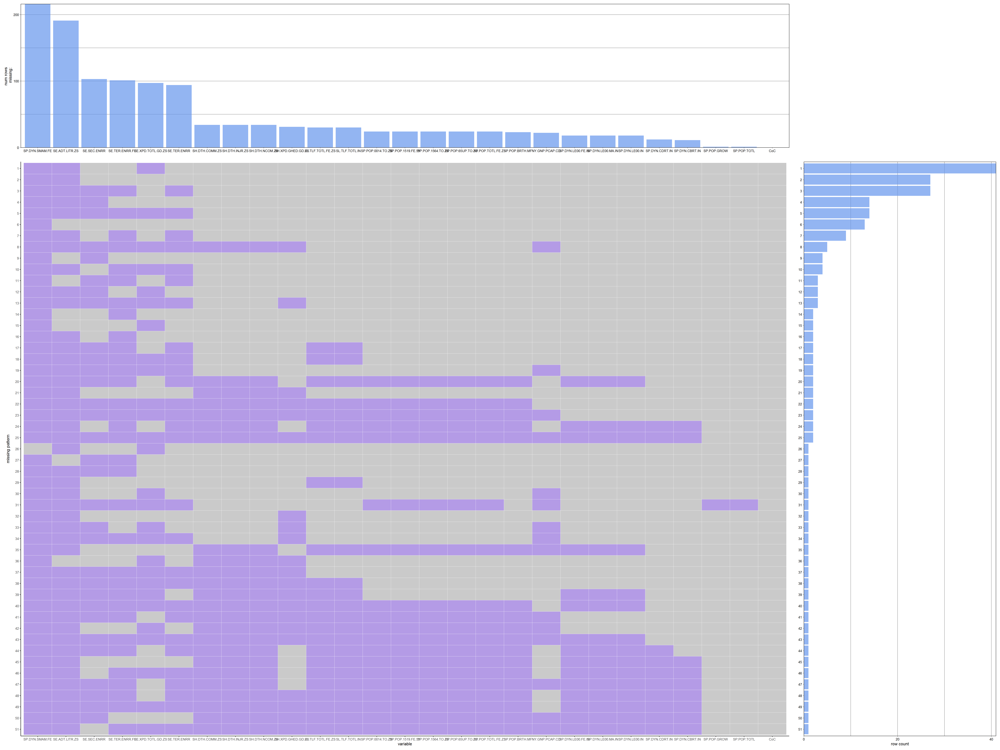
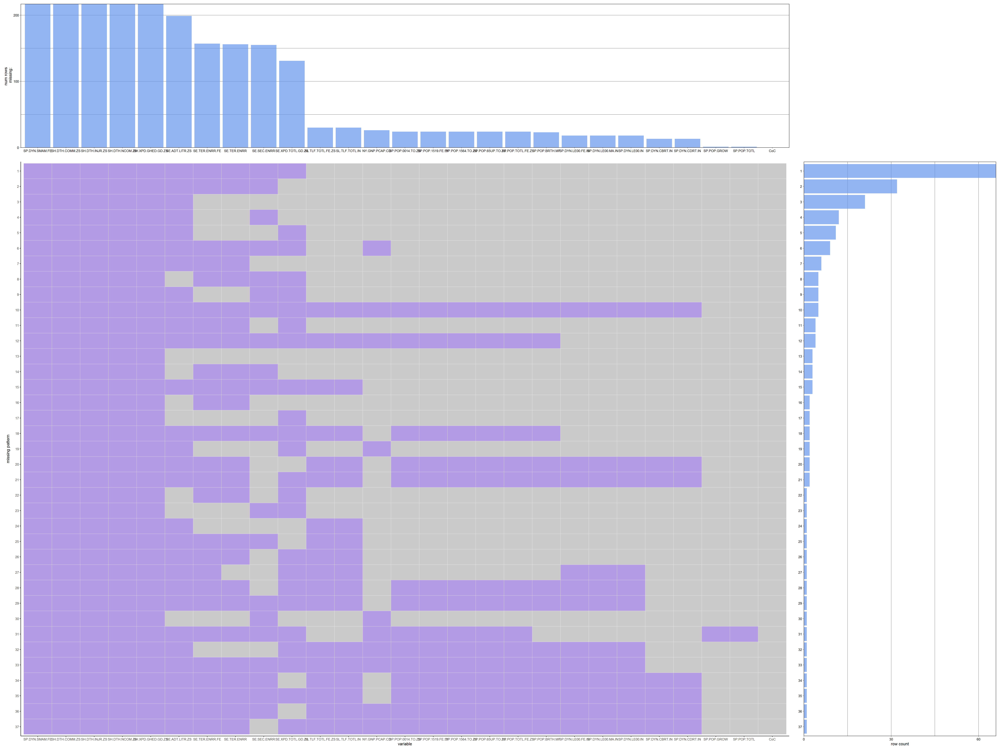

Chapter 3 Data
3.1 Sources
Data Sources:
The World Bank’s database “Health Nutrition and Population Statistics” link is a collection of a large number of series (fields). Different data fields are supplied by different entities:
- Demographic data fields are mostly collected by United Nations Population Division.
- Economic data fields are mostly collected by World Bank.
- Educational data fields are mostly by United Nations Educational, Scientific and Cultural Organization.
- Medical data fields are mostly by WHO.
Despite the diverse nature of the data fields, they all fit into a similar framework: one observation per year per country / region.
Frequency of updates:
The update is probably on an ad-hoc basis, as difference sources run different schedules. (One evidence of update being ad-hoc is: 2021 data is now available for some fields but not for others, and each available field is available for almost all the countries.)
As stated in earlier sections, demographics changes slowly, and it usually takes effect over a long horizon. Therefore, the time-sensitiveness of data is not a big issue for our study. For a certain aspect, if data is unavailable or incomplete for 2021, we would choose a recent year with better data quality.
Data Format:
- The data query filters on “country”, “series” (field), and “year”.
- The downloaded data (from each query) is in the format of a single big table in spreadsheet. The rows are the Cartesian product of the countries and fields, and the columns are the years.
- In total there are 266 “country” (countrys / regions / country groups), 443 “series” (fields), and 50 “year”.
Options:
- We decide to query all the 443 data “series” (field), despite that most of them will not be used in this study. This is for reproducibility, because doing so avoids choosing the fields manually. The total data size is ~40 MB which is reasonable.
- The “country” filter contains not only countries, but also regions (e.g. North America, Middle East, Euro Area) and country income categories (e.g. Upper Middle Income, Least Developed). We choose to make three separate queries and download three separate spreadsheet files, because these three types of classifications are at different levels, and cannot be blended.
- The regions are not mutually exclusive. Besides the collection of mutually exclusive and collectively exhaustive regions (which have “Europe & Central Asia”), we also include “Euro Area” and “European Union”, because “Europe & Central Asia” is too coarse, while “Euro Area” and “European Union” represent more specific economic / social conditions. For plots that show cumulative data by region, we exclude “Euro Area” and “European Union”.
3.2 Cleaning / transformation
Cleaning:
- Data for some small countries are not complete. We will either filter only countries with population > 1 million, or remove NAs.
- Some series (fields) are not available for 2021. Some are observed once every 5 years. For each question, we will choose the most recent year that have good coverage in all the relevant fields. This will be further discussed in section 3.3 “Missing value analysis”.
Transformation:
The rows are the Cartesian product of the countries and fields, while the columns are the years.
- If we select a single column (year) from the data table, the data is in tidy format. If necessary, we would apply pivot_wider() to send the fields to the columns.
- If we select multiple columns (years) from the data table, we would first apply pivot_longer() to create a “Year” column and make the data tidy. If necessary, we would then apply pivot_wider() to send the fields to the columns.
3.3 Missing value analysis
As discussed above, some series (fields) are not available for 2021. For most of our analysis, the latest data available is 2019 or 2020.
Based on the missing patters of 2019 vs. 2020, 2019 appears to have much superior data completeness than 2020. However, 2020 already satisfies our needs to answer most of our questions. In each question, we’ll figure out whether to use 2020 or 2019.
Based on the missing patterns of 2019, the fields with top missing percentages are:
- SP.DYN.SMAM.FE: Age at first marriage, female
- SE.ADT.LITR.ZS: Literacy rate, adult total (% of people ages 15 and above)
- SE.SEC.ENRR: School enrollment, secondary (% gross)
- SE.TER.ENRR.FE: School enrollment, tertiary, female (% gross)
- SE.XPD.TOTL.GD.ZS: Public spending on education, total (% of GDP)
- SE.TER.ENRR: School enrollment, tertiary (% gross)
The first one (SP.DYN.SMAM.FE) is only used in our Question 7. For that question, we actually use 2018 which has better data quality than 2019. The results show that the relationship is very strong even though 2018 has less than half of the countries available.
The rest 5 are all education related fields which are only used for Questions 8 and Question 11. We also examined other recent years, but the data completeness is not better. Therefore, we use 2019 for both these questions.
Missing patterns 2019 
Missing patterns 2020 